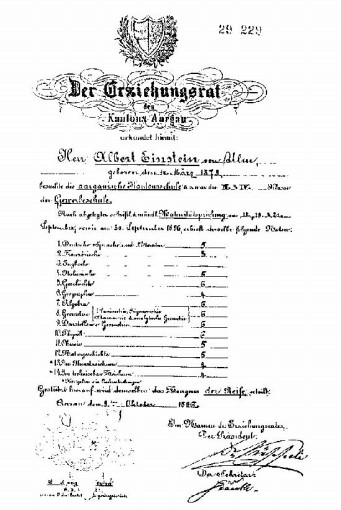
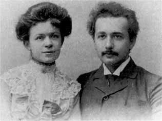
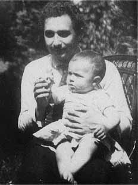
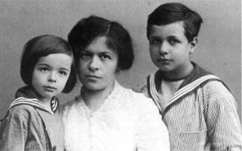

Tại châu Âu vào thời kỳ đó, ngoài các trường kỹ thuật của nước Đức ra, trường Bách Khoa tại Zurich là nơi danh tiếng. Trường này thuộc Liên Bang Thụy Sĩ là một nước có nền chính trị trung lập ở châu Âu. Các sinh viên ngoại quốc nào không thể theo đuổi sự học tại nước mình vì lý do chính trị, có thể tiếp tục sự học tại nơi đây. Vì vậy trong trường Bách Khoa, số sinh viên nước ngoài cũng khá đông. Muốn vào trường, sinh viên phải qua một kỳ thi tuyển. Einstein cũng nộp đơn dự thi nhưng chàng bị rớt: chàng thiếu điểm về môn sinh ngữ và vạn vật, tuy rằng bài toán của chàng thừa điểm. Thực vậy, sự hiểu biết của Einstein về Toán đã vượt hơn các bạn.
Sau khi thi rớt, Einstein bắt đầu lo ngại. Cái viễn ảnh đen tối hiện lên trong trí óc chàng. Cuộc mưu sinh của cha chàng tại nước Ý cũng gặp nhiều trắc trở. Einstein tự trách đã nông nổi bỏ sang nước Ý và hối tiếc sự học tại Gymnasium khi trước, tuy bó buộc thực nhưng đủ bảo đảm cho tương lai. Nhưng may mắn cho Albert, bài làm xuất sắc về Toán của chàng đã khiến cho viên giám đốc trường Bách Khoa chú ý. Ông ta khuyên chàng nên theo học tại một trường khá nổi danh thuộc tỉnh Aarau. Einstein tự hỏi liệu nơi mình sẽ tới học có giống như các trường tại nước Đức không? Cái hình ảnh cũ của ký túc xá hồi còn nhỏ khiến cho chàng sợ hãi lối sống cũ và phân vân trước khi bước vào một nơi học mới. Bất đắc dĩ, Einstein đành phải nhận lời.
Khi tới Aarau, Einstein đã ngạc nhiên hết sức: tất cả các điều ước đoán của chàng khi trước đều sai hết. Nơi đây không có điều gì giống Gymnasium của nước Đức. Tinh thần của thầy trò nơi đây khác hẳn: kỷ luật sắt không có, giáo sư cố công hướng dẫn học sinh biết cách suy nghĩ và tự làm việc. Các bậc thầy đều là những người cởi mở, luôn luôn tiếp xúc với học sinh, bàn bạc cùng cho họ những lới khuyên bảo chân thành. Tinh thần học hành tại nơi đây đã theo đường lối dân chủ thì phương pháp học tập cũng được canh tân theo đà tiến bộ. Học sinh được làm lấy các thí nghiệm về Vật Lý và Hóa Học, được xem tận mắt các máy móc, các dụng cụ khoa học. Còn các môn học khác cũng được giảng dạy bằng cách căn cứ vào các dẫn chứng cụ thể, rõ ràng.
Sau một năm theo học tại Aarau, Einstein tốt nghiệp trung học và được nhận vào trường Bách Khoa Zurich mà không phải qua một kỳ thi nào khác. Trường kỹ thuật này đã cho chàng các sự hiểu biết căn bản về Vật Lý và Toán Học. Ngoài ra, vào các thời giờ nhàn rỗi, Einstein thường nghiền ngẫm các tác phẩm khoa học của Helmholtz, Kirchhoff, Boltzmann, Maxwell và Hertz.
Càng chú tâm đọc sách Vật Lý, Einstein lại càng cảm thấy cần phải có trình độ hiểu biết rất cao về Toán Học. Tuy nhiên, vài giờ Toán tại trường đã không khiến cho chàng chú ý, phải chăng do giáo sư toán thiếu khoa sư phạm? Thực vậy, ông Hermann Minkowski, Giáo Sư Toán, đã không hấp dẫn được sinh viên vào các con số tuy rằng ông là một nhà toán học trẻ tuổi nhưng xuất sắc. Dù sao, những ý tưởng về các định luật Toán Học do ông Minskowski đề cập cũng đã thấm nhập ít nhiều vào trí óc của Einstein và giúp cho chàng phát triển về môn Vật Lý sau này.

Tại nước Ý, cơ xưởng của ông Hermann chỉ mang lại một nguồn lợi nhỏ nên Albert Einstein sống nhờ vào tiền trợ cấp của một người trong họ. Hàng tháng chàng nhận được 100 quan Thụy Sĩ. Tuy món tiền này quá nhỏ nhưng Einstein phải để dành 20 quan, hy vọng sau này sau khi tốt nghiệp, chàng có đủ tiền xin được quốc tịch Thụy Sĩ. Vì cách tiết kiệm này, chàng phải chịu cảnh thiếu thốn và không hề biết tới sự xa hoa.
Từ thuở nhỏ, Einstein đã ít chơi đùa cùng các đứa trẻ trong xóm thì ngày nay khi sống tại trường đại học, chàng cũng vẫn là một sinh viên dè dặt. Tuy vậy, không phải Einstein không có bạn thân. Chàng hay tiếp xúc với Friedrich Adler. Anh chàng này là người Áo, con một nhà lãnh tụ phe Dân Chủ Xã Hội thuộc thành phố Vienna và ông này không muốn con trai của mình dính dáng tới chính trị nên đã gửi Adler tới Zurich theo học. Einstein còn có một cô bạn gái rất thân: cô Mileva Maritsch, người Hung. Cô này thường trao đổi bài vở với Einstein.

Vào năm 1901, Albert Einstein tốt nghiệp trường Bách Khoa và cũng trở nên công dân Thụy Sĩ. Đối với những sinh viên mới ra trường và có năng khiếu về Khoa Học thì ước mơ của họ là làm thế nào có thể xin được một chân giúp việc cho một giáo sư đại học nhiều kinh nghiệm rồi nhờ vậy có thể học hỏi thêm những phương pháp khảo cứu khoa học của ông ta. Einstein cũng mong ước như thế nhưng các đơn xin đều bị khước từ. Không xin được việc tại trường đại học, Einstein quay sang việc nạp đơn vào một trường trung học, nhưng mặc dù có nhiều thư giới thiệu nồng nàn, mặc dù xuất thân từ trường Bách Khoa và có quốc tịch Thụy Sĩ, Einstein vẫn không xin được việc làm. Phải chăng người ta đã không coi chàng như một người dân chính gốc mà chỉ là một công dân trên giấy tờ?
Chờ mãi thì phải có việc: một người bạn của Einstein giới thiệu chàng với ông Haller, giám đốc Phòng Văn Bằng ở Berne. Văn Phòng này đang thiếu một người thạo về các phát minh khoa học trong khi Einstein lại chưa có một kinh nghiệm gì về kỹ thuật cả. Nhưng sau một thời gian thử việc, Einstein được chấp nhận. Bổn phận của chàng là phải xem xét các bằng sáng chế: công việc này không phải là dễ vì các nhà phát minh thường là các tài tử, không biết diễn tả những điều khám phá theo thứ tự, rõ ràng.

Nhờ làm việc tại Phòng Văn Bằng, Einstein được lãnh lương 3 ngàn quan. Cuộc sống tương đối dễ chịu khiến chàng nghĩ đến việc hôn nhân. Einstein cưới cô bạn gái cũ là Mileva Maritsch tuy nàng hơn chàng vài tuổi. Mileva là người có tư tưởng hơi tiến bộ lại không biết cách sống hòa mình với các người chung quanh, vì vậy gia đình Einstein không được hạnh phúc lắm. Ít lâu sau, hai người con trai ra đời, đứa con cả cũng mang tên Albert như cha. Einstein đã tìm được hạnh phúc bên hai đứa con kháu khỉnh.